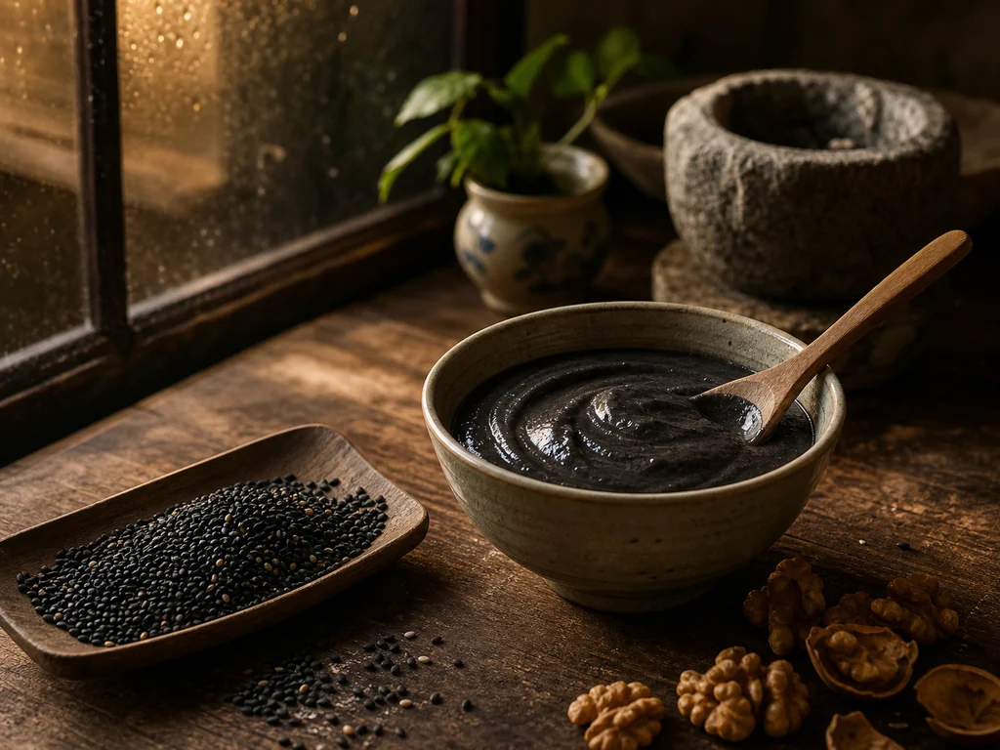

Black Sesame Walnut Paste: The Dark Sweet Bowl
At a dried-goods counter, I can hear the sesame before I smell it: seeds running through a metal scoop, walnuts knocking against the scale, and the vendor folding both into paper for the same kitchen bowl.

The parcel from the dried-goods counter
The vendor shakes the sesame level with one practiced turn of the scoop. Walnuts go into a second parcel because their shells and broken edges would tear the thinner paper. I carry both home tucked upright in the market bag, already aware that the mortar will be the heaviest part of the work.
A stone mortar changes the kitchen sound. Dry seeds begin with a bright crackle under the pestle. As their oils come forward, the sound dulls and the mixture starts clinging to the stone. I stop to scrape the sides, and the toasted smell stays on my fingers.
One bowl, adjusted at the table
The paste does not leave the mortar perfectly even. I spoon the smoother part into the smaller bowl and leave the grainier portion for the diner who likes texture. The adjustment is familiar from plain congee, where a thin serving and a thick serving can leave the same pot.
Tremella soup and longan-red date tea are prepared differently, but the table work is similar. A bowl is cooled, a stone is removed, or a sweeter portion is set aside before it reaches the guest who asked for it.
The mortar after washing
Black sesame hides its ingredients once the surface turns glossy, so a few pale walnut pieces are often left visible. They tell the table what is in the dark bowl without a speech from the cook.
Afterward I rinse the mortar and leave it upside down on a folded cloth. Even clean stone keeps a faint sesame smell near the rim.